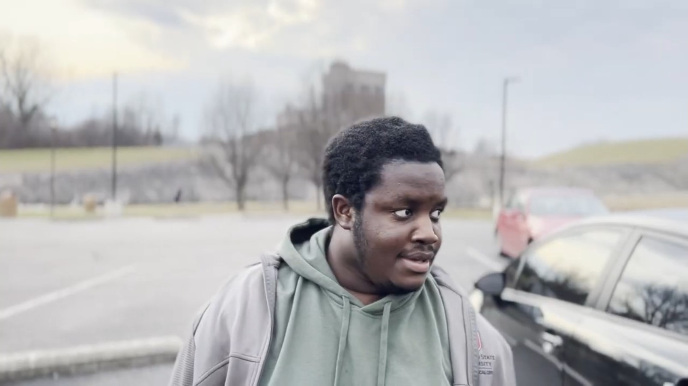

Rebound Studios
Solomon Ernsr is a comic book enthusiast with interest in making stylized action-adventure comedies. So far, Solomon has only appeared, and helped make, Day in the Park. Jonathan is currently writing Solomon into a role of a pharmacist coworker for his movie Chemist.
Actor